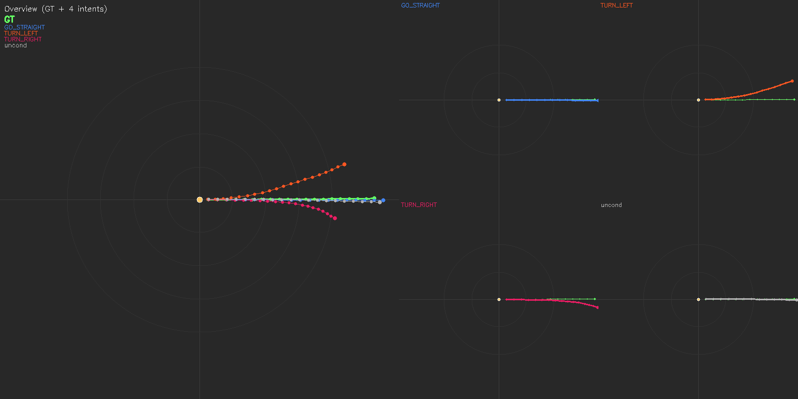
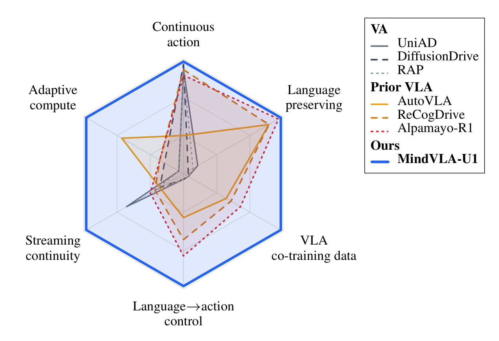
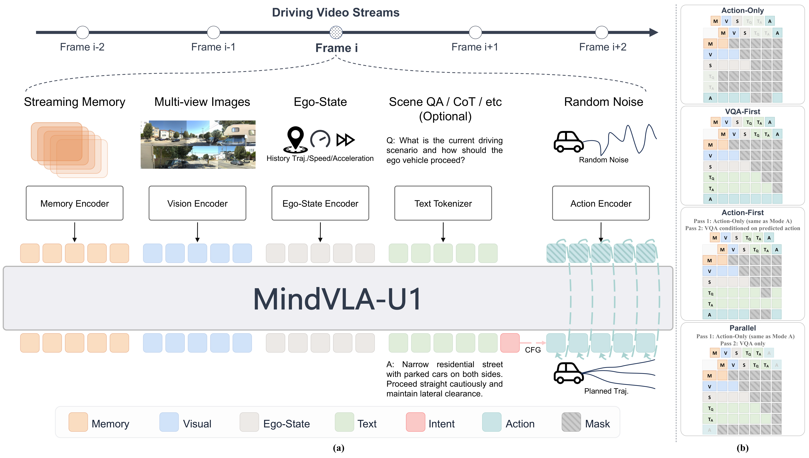
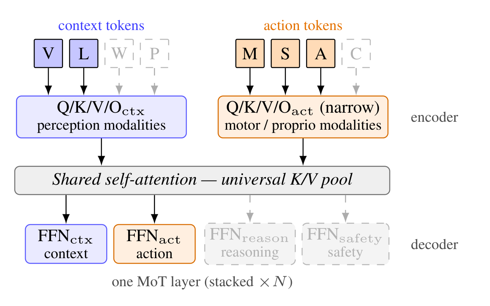
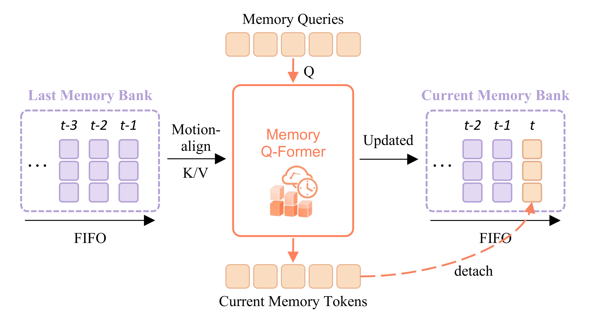
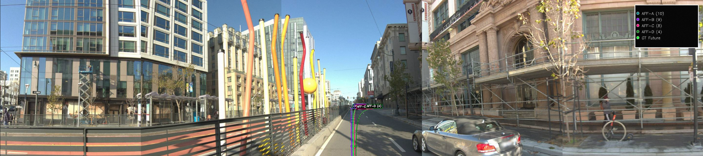
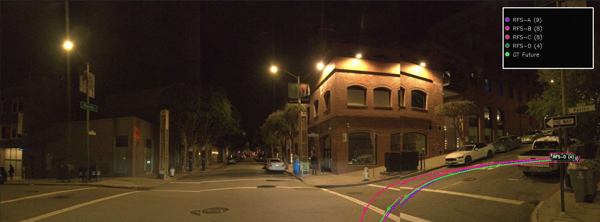
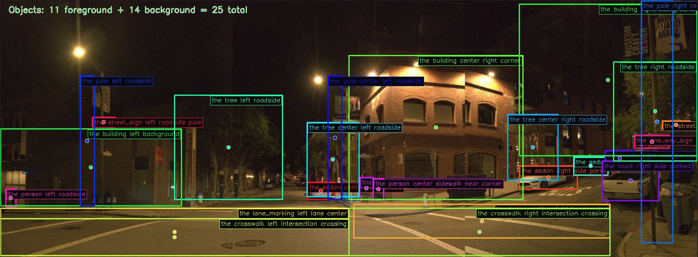

(a) Deployed setting: WOD-E2E GT 3-class intent (GO_STRAIGHT / TURN_LEFT / TURN_RIGHT) + unconditional baseline.
MindVLA-U1 is a unified streaming VLA — one backbone, one forward pass for language and continuous action — that on WOD-E2E becomes the first VLA to surpass experienced human drivers (8.20 RFS vs. 8.13 GT) while preserving the natural-language interface that prior VLAs trade away.
MindVLA-U1 is the only architecture that delivers all six driving-VLA capabilities at once. Vision-to-Action (VA) methods are precise on continuous control but lack semantic, temporal, and language interfaces. Prior VLAs trade control precision for those interfaces. MindVLA-U1 keeps continuous control precision and exposes a measurable language → action bridge, streaming temporal context, and adaptive fast/slow compute on one set of weights.

We report Rater Feedback Score (RFS) and ADE on Waymo Open Dataset End-to-End. On the validation split, MindVLA-U1 surpasses experienced human drivers for the first time (8.20 vs. 8.13 GT RFS). On the official test split, MindVLA-U1 reaches the highest reported RFS and lowest ADE among all VA/VLA methods.
| Method | ADE 3s | ADE 5s | RFS |
|---|---|---|---|
| Vision-to-Action (VA) | |||
| VAD | 3.19 | 5.81 | 4.45 |
| UniAD | 6.50 | 10.81 | 5.78 |
| RAP-DINO | 0.97 | 2.20 | 7.91 |
| Vision-Language-Action (VLA) | |||
| Poutine-Base | 1.27 | 2.94 | 8.12 |
| Human Driver | — | — | 8.13 |
| MindVLA-U1 (Ours) | |||
| Base | 0.92 | 2.14 | 7.83 |
| + Intent-CFG | 0.86 | 2.13 | 7.92 |
| + MoT | 0.89 | 2.11 | 7.92 |
| + RL | 1.01 | 2.28 | 8.20 |
| Method | ADE 3s | ADE 5s | RFS |
|---|---|---|---|
| Vision-to-Action (VA) | |||
| ViT-Adapter-GRU | 1.20 | 2.70 | 7.50 |
| Swin-Trajectory | 1.21 | 2.81 | 7.54 |
| DiffusionLTF | 1.36 | 2.98 | 7.72 |
| Vision-Language-Action (VLA) | |||
| Open-LLaMA | 1.31 | 3.22 | 7.43 |
| NaiveEMMA | 1.32 | 3.02 | 7.53 |
| AutoVLA | 1.35 | 2.96 | 7.56 |
| dVLM-AD | 1.29 | 3.02 | 7.63 |
| HMVLM | 1.33 | 3.07 | 7.74 |
| MindVLA-U1 (Ours) | |||
| Base | 1.16 | 2.67 | 7.77 |
| + RL | 1.09 | 2.66 | 7.87 |
MindVLA-U1 combines a unified shared backbone that jointly performs scene understanding and continuous action generation in a single forward pass over one representation, with a streaming memory paradigm that propagates a compact memory channel across frames in whole driving sessions rather than re-attending to multi-frame video chunks. To let language guide continuous action measurably and to match compute to scene demand, we further develop a language-to-action route and a fast/slow execution scheme that runs on dense or sparse MoT variants of this shared backbone.

Overview of MindVLA-U1. A unified shared backbone decodes language and continuous action from one hidden state in a single forward pass; a streaming memory channel carries temporal context across frames, motion-aligned on read and updated after the pass.
What MoT brings: adaptive compute from a single checkpoint — the same weights run as a fast action-only path (~16 FPS, matched-VA throughput) or as a slow language-then-action path, with no separate models to train or maintain.

Fast/Slow systems on Sparse MoT. Per-modality encoders feed a shared self-attention, per-functionality decoders specialize the outputs. (Dashed: extension slots.)
What streaming memory brings: long-horizon temporal consistency at constant per-frame compute — smoothly evolving plans across frames with no chunk-boundary discontinuities, and improved ADE at every horizon up to 25 s.

Streaming Memory. FIFO memory channel with motion-aligned and refreshed history tokens; gradients propagate across stream.
The unified backbone exposes a measurable language-to-action path. The language head next-token-predicts a driving intent token, whose embedding conditions the action velocity field. Training drops the intent to an unconditional token with probability 0.15, so the same action tokens learn both conditional and unconditional fields; at inference, the two passes are mixed by classifier-free guidance with scale 1.5. Trajectories fan out systematically per intent, while the unconditional pass collapses to a near-GT default.

(a) Deployed setting: WOD-E2E GT 3-class intent (GO_STRAIGHT / TURN_LEFT / TURN_RIGHT) + unconditional baseline.

(b) Extended: MindLabel's 20-class intent vocabulary (cruising, lane_keeping, following, lane_change_left/right, turning_left/right, u_turn, starting, stopping, waiting, accelerating, decelerating, braking, yielding, overtaking, merging, avoiding_obstacle, parking, reversing) + unconditional baseline. Released as part of MindLabel; unexploited in the main-paper.
Reading the figure. Each panel shows BEV trajectories conditioned on every intent class plus an unconditional baseline (left: overview against GT; right: per-intent subplots). Comparing (a) the 3-class deployed setting and (b) MindLabel's 20-class extension on the same scene shows that the conditioning vocabulary, not the scene, controls the modal space — multi-modality is a property of the interface.
We stitch consecutive clips into long-horizon sequences and overlay predictions against ground-truth poses. Memory propagates across clip boundaries with motion-aware alignment; planning evolves smoothly without per-chunk discontinuities. Sequence-level ADE improves at every horizon (3s/5s/10s/15s/20s/25s) when memory is added.
WOD-E2E targets long-tail scenarios with event frequencies below 0.003%. Across daytime urban and nighttime intersection scenes, MindVLA-U1 grounds its plans in scene-specific perception — the same backbone produces both the 360° BEV trajectory and the natural-language object-level descriptions used for VQA supervision.





Per-frame streaming inference. Six consecutive frames: front view (top), 5-second BEV trajectory (middle), and per-waypoint confidence heatmaps (bottom). Plans evolve smoothly across the stream.